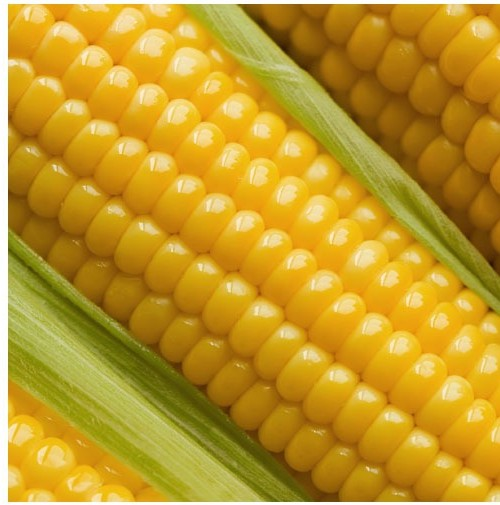

Montevideo
Uruguay
Juncal 1408, oficina 602 — Montevideo 11000
La empresa
Fundada en 1983 en Montevideo. Desde 2004, representante e importador de la maquinaria GREEN HORSE para Uruguay, el Mercosur y Europa.
Nuestra historia
Fundada en 1983, TERRASOL S.A. representa, importa y vende maquinaria Agroindustrial y equipos procedentes de Asia, Brasil y Europa.
Desde 2004 comercializamos Maquinaria GREEN HORSE de procedencia China con tecnología Japonesa y Alemana, para las industrias de arroz, trigo, soja, maíz, leguminosas y raciones.
Con amplia presencia en Mercosur hemos ampliado nuestro mercado ofreciendo soluciones en el sector del Agro a nivel de América Latina y Europa.


Nuestra presencia
Contamos con la experiencia de más de cuatro décadas junto al sector productivo agricultor, ofreciendo diseño de Layout, asistencia técnica, instalaciones y servicio post venta. Contamos con un amplio stock de repuestos que nos permiten brindar rápida asistencia.
Brindamos abastecimiento integral a la Industria, desde Almacenamiento de Granos y sus derivados (Almacenamiento en Silos Galvanizados Fondo Cónico y plano o Silos Acero INOX Cónicos), Transporte (Elevadores, Redlers, Roscas Helicoides, etc), Maquinaria de Prelimpieza, Zarandas Clasificadoras, Selectoras Ópticas, Balanzas de embolse electrónicas, Robots de enfardados y Paletizados así como Etiquetadoras.
Nuestras especialidades
Trabajamos con las industrias de arroz, trigo, soja, maíz, leguminosas y fábricas de raciones, en Uruguay, el Mercosur, América Latina y Europa.
Línea completa de molino arrocero: desde la prelimpieza y el despedrado hasta el blanqueado, el clasificado y la selección electrónica.
Molienda de trigo: limpieza, plansifters de tamizado, bancos de cilindros, purificadores densimétricos y filtros de manga.
Equipamiento de limpieza, clasificación, almacenaje y envasado adaptado al maíz y a las fábricas de raciones.
Soja, poroto y leguminosas: despedrado, clasificación por tamaño y selección óptica, con equipos configurados a la muestra.
Dónde estamos
Casa central en Uruguay y oficina comercial en España para el mercado europeo.
Uruguay
España
Diseñamos el layout completo, seleccionamos el equipo según tu grano y tu rendimiento objetivo, y te acompañamos desde el montaje hasta el servicio post venta.